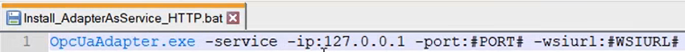
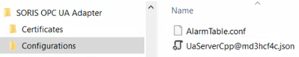

Start an Adapter as a Windows Service

- You can only start the service using the HTTP protocol.
- For more details about the adapter Windows service configuration, in SORIS, see (Optional) Configure Adapter Windows Service.
- The adapter software has been installed. For instructions, see Install the Adapter Software.
- In C:\Program Files (x86)\Siemens\OPC UA Adapter, open the file Install_AdapterAsService_HTTP.bat with a text editor.

- Enter the following parameters:
- Next to
port, replace#PORT#with the appropriate port number.
NOTE: It is suggested to use a free port number different from the default one (8080). - Next to
wsiurl, replace#WSIURL#with the web application URL, as follows:
a. In SMC, select Websites > Website > Web Services Application.
b. Copy the web application URL from the Web Application Details expander to wsiurl. - By default, the setting for the WebSocket port of the adapter is 8005.
If this port is already in use on the computer where the adapter is installed, or multiple SORIS adapters are installed on the same computer, add the following additional parameter to the BAT file:-wsport:[port number]
(for example,OpcUaAdapter.exe -service -ip:127.0.0.1 -port:8081 -wsiurl:https://xxxxx:443/WebSerApp_MyProject –wsport:8007). - Save the changes.
- Run the Install_AdapterAsService_HTTP.bat file as administrator.
- The service is installed and started automatically among the Windows services.
- In C:\Program Files (x86)\Siemens\SORIS OPC UA Adapter the Configurations folder is created, which includes the AlarmTable.conf file and any other files that allow connecting to the OPC UA servers.

For details about back and restore, see OPC UA Configuration Backup and Restore.
NOTE: The AlarmTable.conf file includes the alarm classes configuration. This file is shared among the multiple adapter instances.